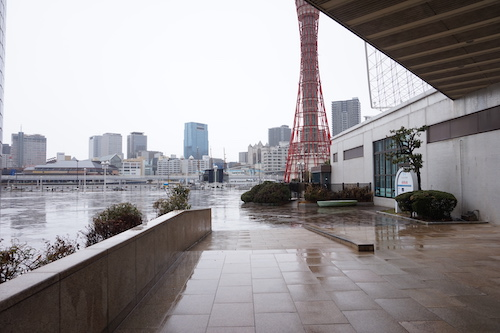
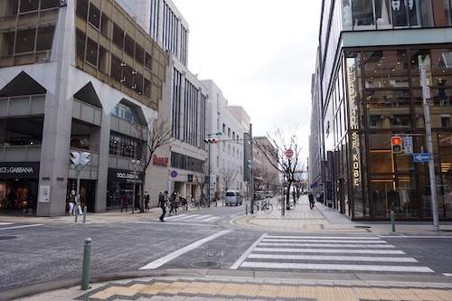
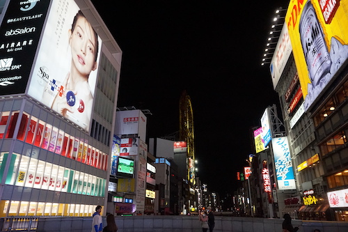
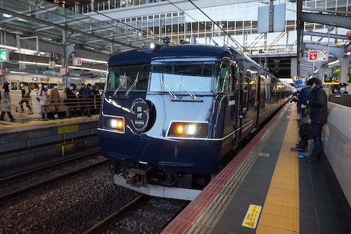
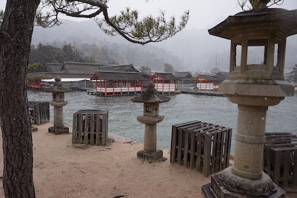
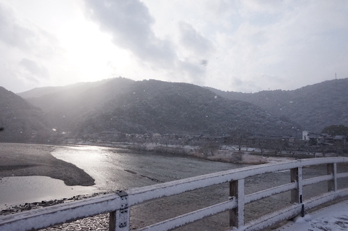
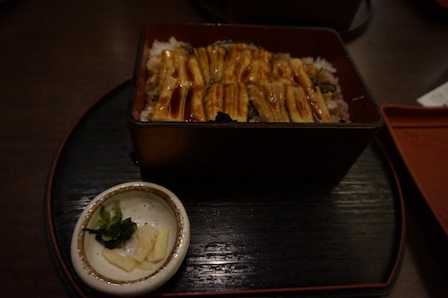
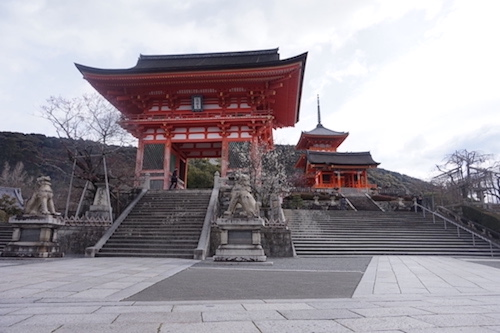
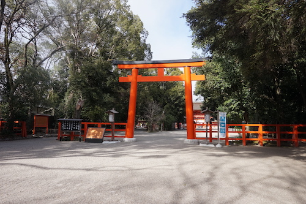

<!DOCTYPE html>
<html>
<head>
  <meta charset="utf-8">
  <meta name="view-port" content="width=device-width, initial-scal=1">
  <title>銀河へようこそ</title>
  <link rel="stylesheet" href="css/style.css">
</head>
<body>
  <div class="wrapper">
    <!--ヘッダー情報-->
    <header class="header">
      <h1 class="logo"><a href="home.html"></a></h1>
      <nav class="nav">
        <ul>
          <li><a href="home.html">Home</a></li>
          <li><a href="america.html">サンフランシスコ</a></li>
          <li><a href="ginga.html">銀河</a></li>
          <li><a href="hokkaido.html">北海道</a></li>
          <li><a href="contact.html">お問い合わせ</a></li>
        </ul>
      </nav>
    </header>
    <!--メイン情報-->
    <main>
      <h2>銀河</h2>
      <div class="spot-block">
        <!--スポット一つ目-->
        <div class="spot-item">
          <div class="spot-photo">
            
          </div>
          <div class="spot-text">
            <h3>神戸港</h3>
            <p>夜行バスで東京を離れ、初めに着いたのは神戸です。土砂降りでしたが、神戸の滞在時間は半日でしたので雨を顧みず移動しました。</p>
            <p>荷物をできるだけ少なくして旅行をしたいので折り畳み傘を持って行くかは悩みどころです。1週間ほどの国内旅行であればバックパック一個が理想です。</p>
          </div>
        </div>
        <!--スポット二つ目-->
        <div class="spot-item">
          <div class="spot-photo">
            
          </div>
          <div class="spot-text">
            <h3>旧居留地38番館</h3>
            <p>江戸時代、外国から治外法権を受けていた土地です。現在はその建築的価値を生かして商業利用されています。</p>
            <p>出店しているブランドも品が良く、東京では見られない綺麗な街並みでした。</p>
          </div>
        </div>
        <!--スポット三つ目-->
        <div class="spot-item">
          <div class="spot-photo">
            
          </div>
          <div class="spot-text">
            <h3>大阪心斎橋</h3>
            <p>10年ぶりに心斎橋に来ました。印象は、前に来たときと特に変わらず治安の悪そうなところでした。いろんな無駄知恵をつけた分、この慣れない土地を歩くのはかなり緊張感がありました。</p>
            <p>1日で東京、神戸、大阪と移動して来た上、飲食店が時短営業をしていたので夕食を探すのがとてもしんどかったです。</p>
          </div>
        </div>
        <!--スポット四つ目-->
        <div class="spot-item">
          <div class="spot-photo">
            
          </div>
          <div class="spot-text">
            <h3>銀河</h3>
            <p>このページのタイトルである”銀河”とは寝台列車の名前です。寝台列車は昔の旅では良く使われていた交通手段ですが現在ではほとんど残っていません。私が確認した限りではこの”銀河”を合わせて二つのみです。他の交通手段に比べて利益率が悪いのです。それにも関わらず今の時期に寝台列車を新装し運用するJRには昔の文化を引き継ぐ信念を感じます。普段の運賃が高額なのは不満ですがチャレンジ精神のある会社です。</p>
            <p>列車に詳しい友達に教えてもらい少し詳しくなりました。自分の知らない領域を知ると世界が広がり刺激を与えてくれます。</p>
            <p>この列車で大阪から広島まで向かいました。</p>
          </div>
        </div>
          <!--スポット七つ目-->
          <div class="spot-item">
            <div class="spot-photo">
              
            </div>
            <div class="spot-text">
              <h3>宮島</h3>
              <p>厳島神社の有名な鳥居は修理中でした。どこの観光地も修繕しているところが多く感じます。偶然かもしれませんが、この時期を乗り越え、また活気のある観光業を復活させるために準備しているのだと思います。</p>
              <p>日本は基本的にどの県に行っても素晴らしいところばかりで、さらに精度良く観光地化すればとても勝機のある業界だと思います。</p>
            </div>
          </div>
          <!--スポット八つ目-->
          <div class="spot-item">
            <div class="spot-photo">
              
            </div>
            <div class="spot-text">
              <h3>山口県 岩国 錦帯橋</h3>
              <p>在来線で広島から山口まで移動しました。</p>
              <p>橋が美しいのもはもちろんですが、雪が降っていて壮観な景色でした。</p>
              <p>東京はこの時期には寒くなかったので、服装を完全に見誤りました。短い人生の中で最も寒い状況を経験しました。岩国になかったユニクロを恨みました。結局、広島に戻って閉店ギリギリのユニクロでダウンベストとヒートテックを購入しました。服のありがたみをここまで感じたことはありません。なぜか無敵になった気分でした。旅にはライトダウンを持っていくことをお勧めします。</p>
            </div>
          </div>
          <!--スポット九つ目-->
          <div class="spot-item">
            <div class="spot-photo">
              
            </div>
            <div class="spot-text">
              <h3>穴子丼</h3>
              <p>こちらも時短営業で急いでお店を探す中、運良く見つけた穴子丼です。旅行中の食事は決めすぎない方がスケジュールに柔軟性を持たせられるので上手くいくことが多いです。</p>
              <p>初めて穴子丼を食べましたが感動的なおいしさでした。￥980というリーズナブルなところもありがたかったところです。</p>
            </div>
          </div>
          <!--スポット十つ目-->
          <div class="spot-item">
            <div class="spot-photo">
              
            </div>
            <div class="spot-text">
              <h3>清水寺</h3>
              <p>新幹線で広島から京都へ向かいました。チケットは寝台列車のチケットとセットになっており、破格の値段でした。</p>
              <p>有名な写真スポットの写真はたくさん転がっているのでここに載せてもあまり価値のあるものではありませんが、全く人がおらず普段は絶対に個人では撮れない写真なので、これはなかなか珍しいものです。</p>
            </div>
          </div>
          <!--スポット十一つ目-->
          <div class="spot-item">
            <div class="spot-photo">
              
            </div>
            <div class="spot-text">
              <h3>下鴨神社</h3>
              <p><a href="https://yojouhan.noitamina.tv/">”四畳半神話大系”</a>という小説、アニメの舞台にもなった世界遺産です。最近アニメを見初めて知りました。とても良い作品です。世界遺産かどうかは正直どうでも良いことで、文化的に重要で森の中にある綺麗な神社です。</p>
            </div>
          </div>
      <!--フッター情報-->
      <footer class="footer">
        <p class="clear">&copy;Copyright ks. All rights reserved.</p>
      </footer>
    </div>
  </body>
  </html>
